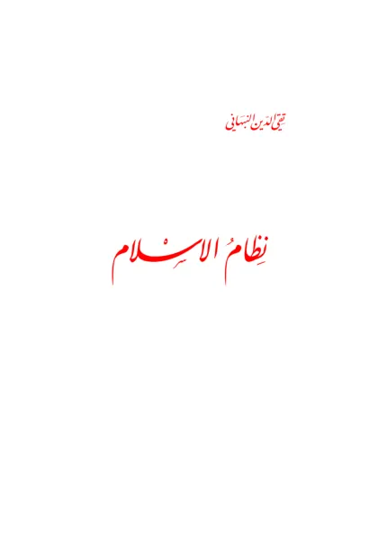

نظام الإسلام
Peraturan Hidup dalam Islam
Baca Peraturan Hidup dalam Islam (نظام الإسلام) karya Taqiyuddin an-Nabhani secara gratis di Maktabah Ilmu: teks Arab, Indonesia, Inggris. Tanpa daftar, tanpa iklan.
Buka kitab iniLihat lemari ilmuDaftar isi
- Pengantar
- JALAN MENUJU IMAN
- QADLA DAN QADAR
- KEPEMIMPINAN BERFIKIR · DALAM ISLAM (1)
- KEPEMIMPINAN BERFIKIR · DALAM ISLAM (2)
- KEPEMIMPINAN BERFIKIR · DALAM ISLAM (3)
- TATACARA MENGEMBAN · DAKWAH ISLAM
- HADLARAH ISLAM
- PERATURAN HIDUP · DALAM ISLAM
- MACAM-MACAM HUKUM · SYARIAT ISLAM
- AS-SUNAH
- MENELADANI PERBUATAN · RASULULLAH SAW
- MELEGALISASI HUKUM · SYARIAT ISLAM
- UNDANG-UNDANG DASAR · DAN UNDANG-UNDANG
- RANCANGAN UNDANG-UNDANG DASAR (1)
- RANCANGAN UNDANG-UNDANG DASAR (2)
- AKHLAK DALAM PANDANGAN ISLAM